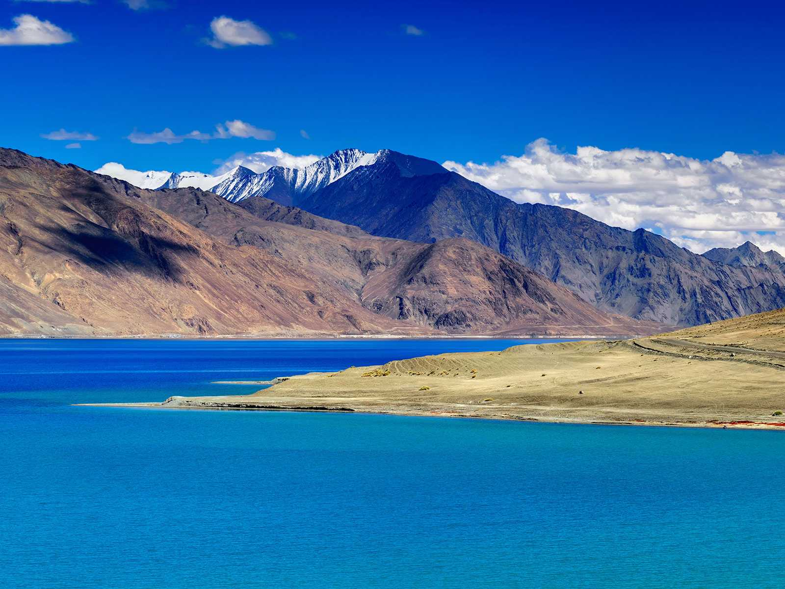

Welcome to J&K, Jammu and Kashmir is a state in northern India, often denoted by the acronym J&K. It is located mostly in the Himalayan mountains, and shares borders with the states of Himachal Pradesh and Punjab to the south. Jammu and Kashmir has an international border with China in the north and east, and the Line of Control separates it from the Pakistani-administered territories of Azad Kashmir and Gilgit-Baltistan in the west and northwest respectively. The state has special autonomy under Article 370 of the Constitution of India. Jammu and Kashmir consists of three regions: Jammu, the Kashmir Valley and Ladakh. Srinagar is the summer capital, and Jammu is the winter capital. Jammu and Kashmir is the only state in India with a Muslim-majority population. The Kashmir valley is famous for its beautiful mountainous landscape, and Jammu's numerous shrines attract tens of thousands of Hindu pilgrims every year. Ladakh, also known as "Little Tibet", is renowned for its remote mountain beauty and Buddhist culture.
Tours to Srinagar

Srinagar is the largest city and the summer capital of the Indian state of Jammu and Kashmir. It lies in the Kashmir Valley on the banks of the Jhelum River, a tributary of the Indus, and Dal and Anchar lakes. The city is famous for its gardens, waterfronts and houseboats. It is also known for traditional Kashmiri handicrafts and dried fruits.
Tours to Pahalgam
Pahalgam is a town and a notified area committee in Anantnag district of the Indian state of Jammu & Kashmir. It is a popular tourist destination and hill station.It is located 45 kilometres (28 mi) from Anantnag on the banks of Lidder River at an altitude of 7,200 feet (2,200 m). Pahalgam is the headquarters of one of the five tehsils of Anantnag district. Pahalgam is associated with the annual Amarath Yatra. Chandanwari, located 16 kilometres (9.9 mi) from Pahalgam is the starting point of the yatra that takes place every year in the months of July–August.
Tours to Gulmarg
Gulmarg is a town, a hill station, a popular skiing destination and a notified area committee in the Baramula district of the Indian state of Jammu and Kashmir.The town is situated in the Pirpanjal range in the western Himalayas. Originally named Gaurimarg ("the fair one") by shepherds in honor of the Hindu goddess Parvati, the resort was renamed Gulmarg(“meadow of flowers”) by Sultan Yusuf Shah of the Chak Dynasty who frequented the place with his queen Habba khatoon in the 16th century.Wild flowers of 21 different varieties were collected by the Mughal emperor Jahangir for his gardens in Gulmarg. In the 19th century, British civil servants started using Gulmarg as a retreat to escape summers in North Indian plains. Hunting and golfing were their favorite pastime and three golf courses were established in Gulmarg including one exclusively for women.One of the golf courses survives and at an altitude of 2,650 metres (8,690 ft) is the world's highest golf course.In 1927, British established a ski club in Gulmarg and two annual ski events were hosted one each during Christmas and Easter.Central Asian explorer Aurel Stein also visited Gulmarg during this period.
Tours to Khilanmarg
Khilanmarg'id Jammu & Kashmir, India is a small valley about a 6-km walk from the Gulmarg bus stop and car park. The meadow, carpeted with flowers in the spring, is the site for Gulmarg’s winter ski runs and offers a fine view of the surrounding peaks and over the Kashmir Valley. It’s a 600-metre ascent from Gulmarg to Khilanmarg and during the early spring, as the snowmelts, it can be a very muddy hour’s climb up the hill. The effort is rewarded, if it’s clear, with a sweeping view to of the great Himalayas from Nanga Parbat to the twin 7,100-metre peaks of Nun and Kun to the southeast.
Tours to Kargil
Kargil is a city in the Kargil district of Ladakh region, in the Indian state of Jammu and Kashmir. It is the second largest town in Ladakh after Leh. It is located 60 km and 204 km from Drass and Srinagar to the west respectively, 234 km from Leh to the east, 240 km from Padum to the southeast and 1,047 km from Delhi to the south. Present-day Kargil was not the natural capital of the region, or Purig as it was also known. Earlier, Purig consisted of a number of small but independent kingdoms, which included Chiktan, Sot and the Suru Valley. These tiny principalities would often fight among themselves over petty issues. Gasho “Thatha Khan”, an exiled Buddhist prince in the 9th century AD, is perhaps the first ruler who brought together all the territories under a united administration. Another sultan of Purig extended his kingdom to include Zanskar, Pashkum (Jammu and Kashmir) and Sodh, pretty much the territory of the present Kargil district. He is referred to as “the Purig Sultan”. His capital was based at Karpokhar in the Suru Valley. The other famous kings of Kargil were Boti Khan, Abdal Khan, Amrood Choo, Tsering Malik, Kunchok Sherab Stan and Thi Sultan.
Tours to Leh
Leh was the capital of the Himalayan kingdom of Ladakh, now the Leh district in the Indian state of Jammu and Kashmir. Leh district, with an area of 45,110 km2, is the second largest district in the country, after Kutch, Gujarat (in terms of area). The town is dominated by the ruined Leh Palace, the former mansion of the royal family of Ladakh, built in the same style and about the same time as the Potala Palace-the chief residence of the Dalai Lama until the 14th Dalai Lama fled to Dharamshala, India, during the 1959 Tibetan uprising. Leh is at an altitude of 3,524 metres (11,562 ft), and is connected via National Highway 1D to Srinagar in the southwest and to Manali in the south via the Leh-Manali Highway. In 2010, the sudden floods caused by a cloud burst heavily damaged Leh.